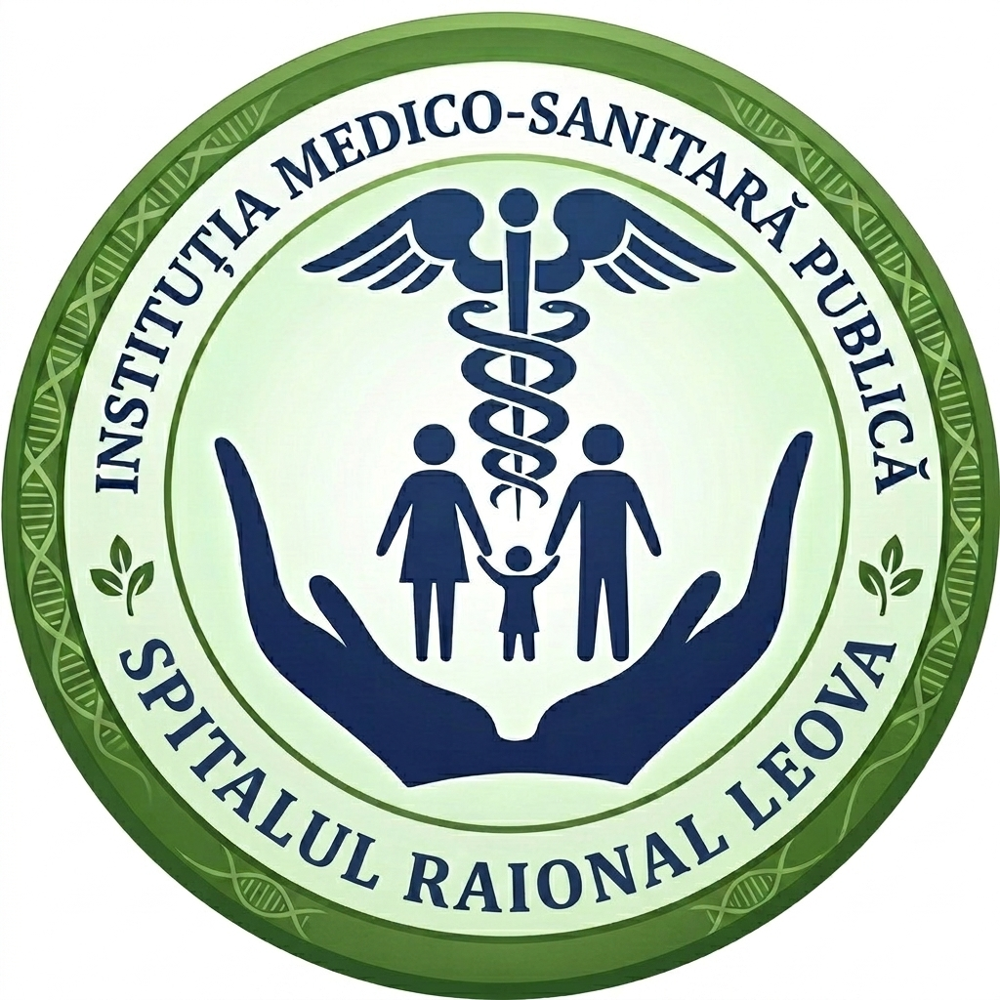

Asistent AI — Spitalul Raional Leova
Acces rapid la asistentul AI al departamentului dumneavoastră. Alegeți departamentul și puneți întrebarea în chat.
1. Alegeți departamentul
2. Deschideți chat-ul
3. Puneți întrebarea